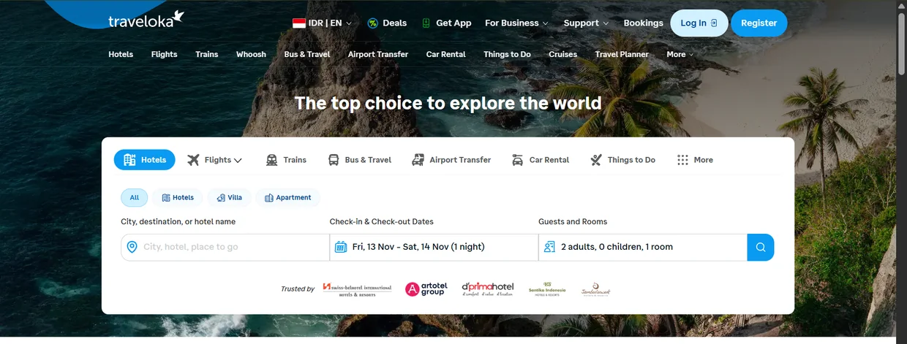

Four domains, one net, and regression that stopped costing story points.
At Traveloka, Platform had four domains running at once — Homepage, Merchandising and Promotions, User Identity and Security, Messaging — each shipping into three surfaces: web, mWeb, and native. Regression was manual, and manual regression is paid for in story points every single release. This is the net that replaced it.
Problem
Four domains is not four products — it is four sets of dependencies sharing one login, one homepage slot, one promo engine. A change in Promotions can break a Homepage module; a change in Identity can break everything. So every release needed the same manual pass over and over, and that pass was written into the sprint as story points.
The cost was not the testing. The cost was that regression competed with new testing, and when a release ran short, the thing that got cut was the thing that protects the release.
What I built

One net across four domains, not four separate suites
I owned QA for all four domains at once, so the automation was shaped by the dependency between them rather than by team boundaries. A failure in one domain could be traced to a change in another, because they lived in the same run.
Automate the regression so it stops costing story points
Merchandising and Homepage regression became fully automated. Those platforms stopped consuming regression story points per release — the capacity went back into new coverage instead of re-proving what already worked.
One tool per surface, chosen for the surface
Playwright for web, Maestro and Appium for Android and iOS, Karate for API, all running in the SDET team's GitHub Actions pipelines. The tool followed the surface; the pipeline stayed one place.
Risk-based test plans, written before the build
Plans went into TestRail during kick-off, with PMs and developers in the room. E2E scenarios were reused as the base for shift-left automation, so the same scenario that proved a feature also guarded it later.
Keep the suites you did not write alive
I fixed and maintained test cases outside my own domains — Points, User, Cobrand — because a pass rate is a property of the whole pipeline, not of the folder you happen to own.
Evidence
Figures from the run reports of those cycles. Business-impact numbers are deliberately withheld; these are the QA measures.
| Measure | Result | Against |
|---|---|---|
| Mobile E2E coverage | 86.07% | target 85% |
| Mobile E2E pass rate | 91.78% | target 80% |
| Web pass rate | 91.55% | — |
| mWeb pass rate | 94.14% | — |
| Merchandising coverage, mobile | 90.87% | fully automated |
| Merchandising coverage, Web and mWeb | 100% | fully automated |
| Product features tested in 2025 | 85 | across the four domains |
Result
Two of the four domains stopped consuming regression story points entirely. The suite ran in the pipelines the SDET team maintained, and it found crash-level defects during automation runs — before staging and before production, which is the only place a crash is cheap.
What I would do differently
- Shard by domain from day one. One long pipeline is fine at first and a bottleneck by month six.
- Publish the pass rate, not just the coverage. Coverage without pass rate is a number that rewards writing tests that never run.
- Track flake as a first-class defect. We treated a flaky test as noise to retry. It is a defect in the suite, and it launders real failures.